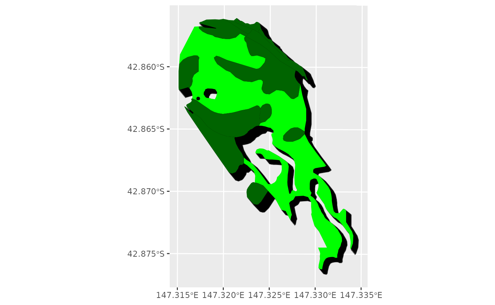

Ember Distance Modelling
ember-distance.RmdModel Background
The ember distance model encapsulates a statistical relationship built on top of ember simulation modelling. Fire Dynamics Simulator was user to model ember dispersion from simulated fires in Euclyptus forests under a range of weather and fuel load conditions. Statistical modelling found a simple relationship could be established between Forest Fire Danger Index (FFDI), fuel load in tonnes per hectare, and the ember distance. Embers fall in a continuous distribution away from the fire front. Our model uses the furthest distance at which an ember density of 5 embers per square meter is reached as the response variable.
The ffdi function can be used to calcualte the forest fire danger index for given meteorological variables, comprising temperature, relative humidity, wind speed, and drought factor.
library(ggplot2)
library(fiRetools)
library(sf)
#> Linking to GEOS 3.12.1, GDAL 3.8.4, PROJ 9.4.0; sf_use_s2() is TRUE
library(dplyr)
#>
#> Attaching package: 'dplyr'
#> The following objects are masked from 'package:stats':
#>
#> filter, lag
#> The following objects are masked from 'package:base':
#>
#> intersect, setdiff, setequal, union
FFDI <- ffdi(Temperature=32, Humid=18,Wind=25, DF=9)
print(FFDI)
#> [1] 31.73809Using the FFDI and the fuel load (here, 12.5 tonnes/ha), we can then generate an ember transport distance using the ember_dist function.
ed <- ember_dist(FFDI = FFDI,FL = 12.5)
print(ed)
#> [1] 68.68252The next step is to project the shadow of the polygon in the expected prevailing wind direction by that distance, incorporating some off-track ember spread, which our modelling estimated at 6.5 degrees. Load a polygon containing the boundary of the vegetation patch of interest (which is assumed to have the fuel load defined above) and use the shift_poly function to project it at an angle. The angle is the direction it is moving towards, and if we assume a north-west wind, this will mean a south-east direction, or 135 degrees. Polygon data should be in a projected coordinate system with metres as the spatial unit.
veg <- read_sf("dry_forest_patch.gpkg")
sh_poly <- shift_poly(poly=veg,dis = ed,base_ang = 135, var_ang = 6.5)This output polygon encompasses the original vegetation polygon, but extends it a distance and direction containing the shadow of the embers out to the distance. The shift_poly function can be run for each vegetation type (which may have differnet fuel loads), and then polygons merged to produce an overall ember range.
veg_1 <- read_sf("dry_forest_patch.gpkg")
ed_1 <- ember_dist(FFDI = FFDI,FL = 12.5)
sh_poly_1 <- shift_poly(poly=veg_1,dis = ed_1,base_ang = 135, var_ang = 6.5)
veg_2 <- read_sf("wet_forest_patch.gpkg")
ed_2 <- ember_dist(FFDI = FFDI,FL = 18.5)
sh_poly_2 <- shift_poly(poly=veg_2,dis = ed_2,base_ang = 135, var_ang = 6.5)
ember_shadow <- bind_rows(sh_poly_1,sh_poly_2) %>% summarise()Output ember shadow polygon can then be plotted or saved to disk.
ggplot() + geom_sf(data=ember_shadow,fill="black") +
geom_sf(data=veg_1,fill="green",color=NA) +
geom_sf(data=veg_2,fill="darkgreen",color=NA)
# Save output to Geopackage
#write_sf(ember_shadow,"ember.gpkg")